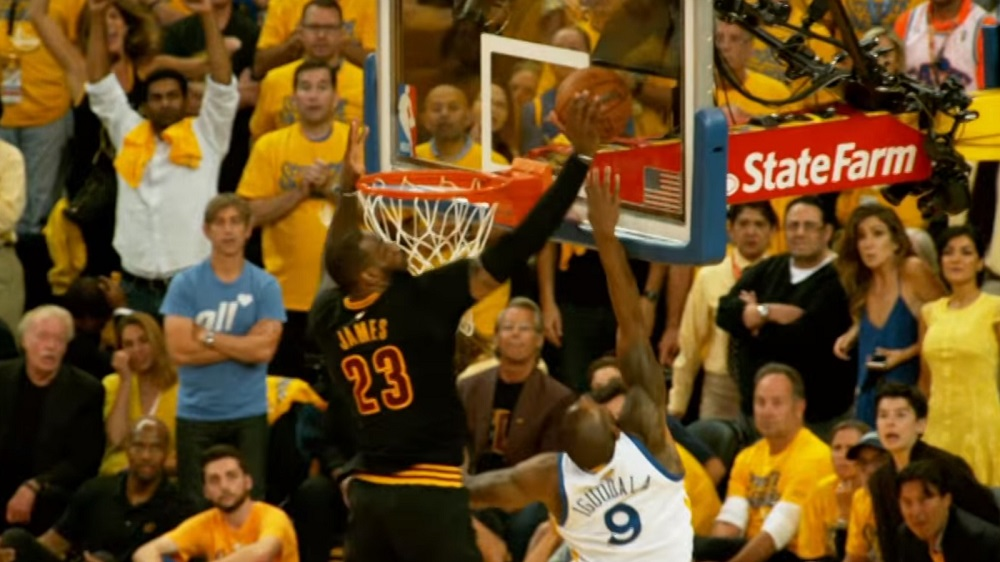
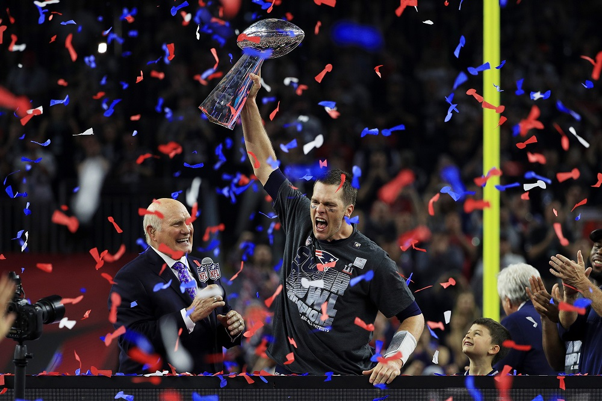
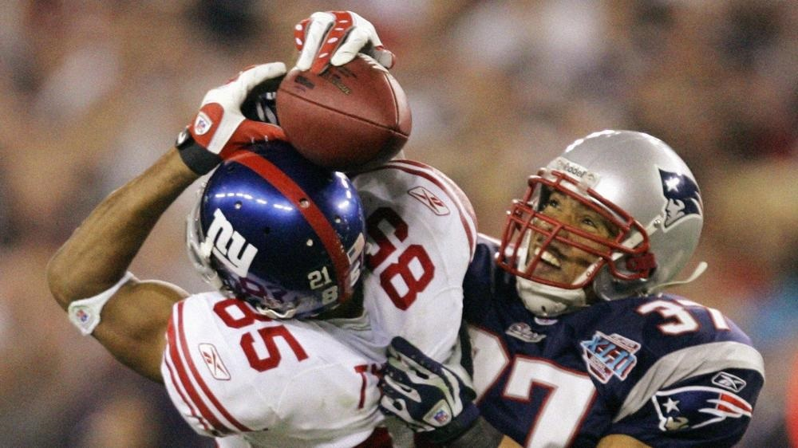
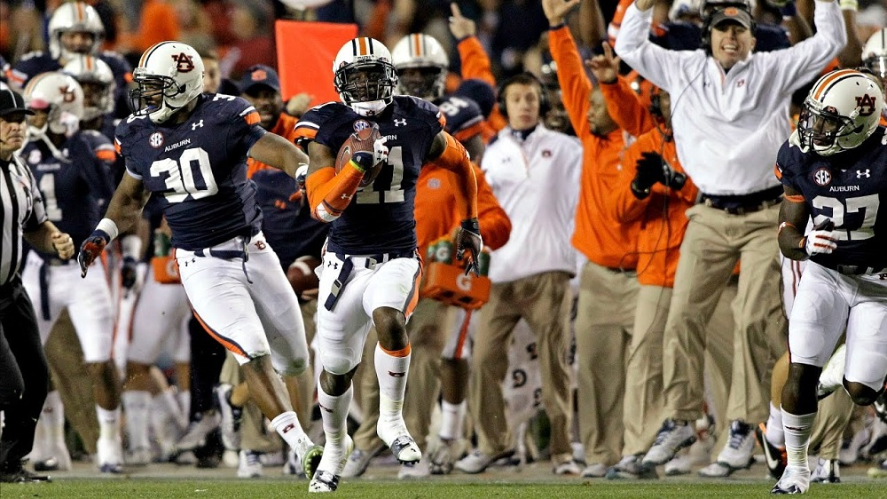
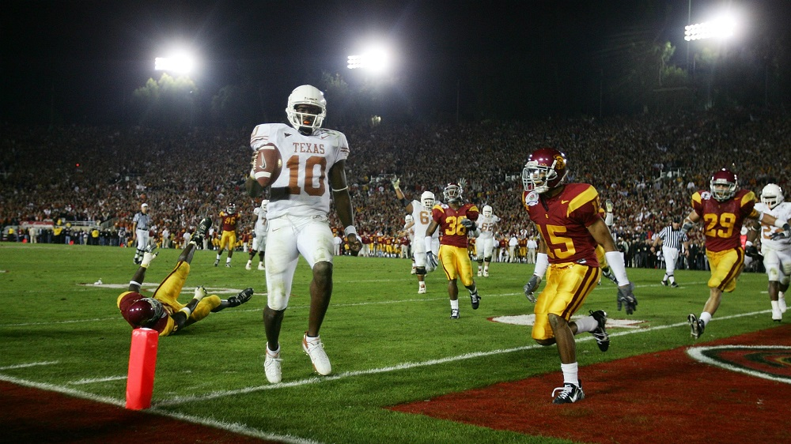
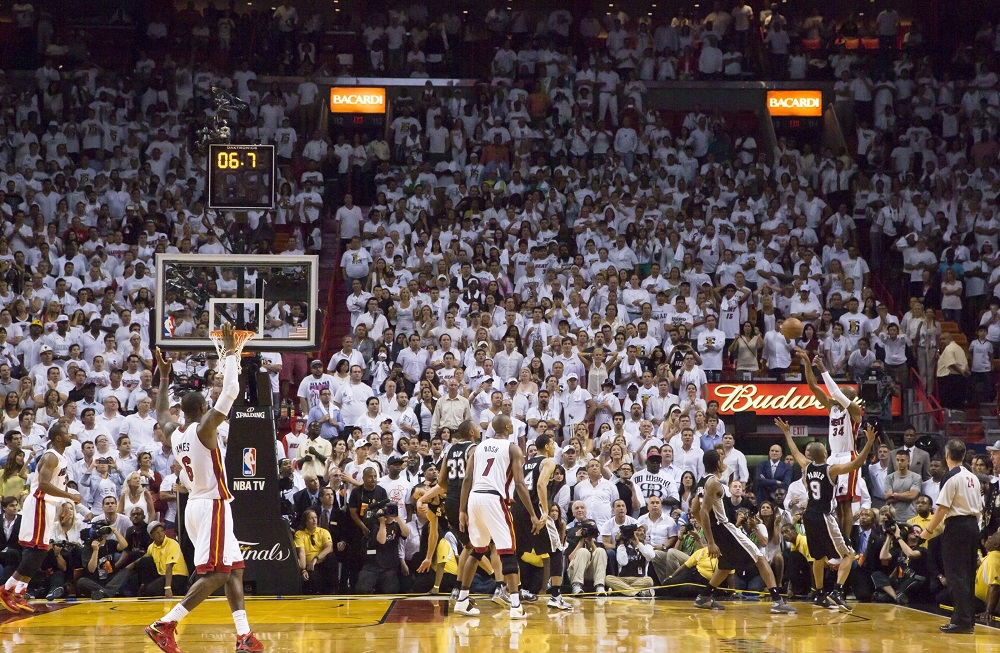
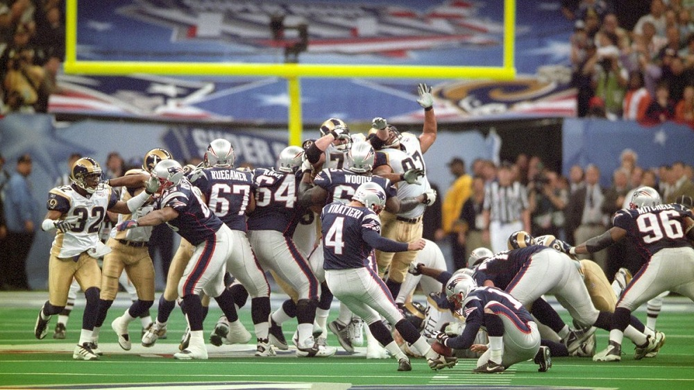

Greatest Moments in Sports History
Welcome to the World of Sports. Here you will find the greatest sports moments of the 21st Century. Explore the unique, special, and unbelieveable beauty of the four main North American Sports.
These moments will consist of record breaking acheviements, both individual and team, Playoff games, and impossible plays.
If there is a moment, game, or play you can't believe occured and want to discuss it use the #GMISH and an image of the moment, game, or play you want to debate. Or find us on our other social media accounts below.
Our Top 10 Moments of the 21st Century
#1
Cubs Break the Curse of the Billy Goat
In order to understand the importance of this moment one must understand the curse of the Billy Goat.
#2
LeBron James Brings a title to Cleveland
After 57 years of all 3 major sport teams in Cleveland losing in some of the most unimaginable ways possible.

#3
Patriots complete largest comeback in Super Bowl History
With Tom Brady, and the New England Patriots, down 28-3 with only 19 minuets left in the game no one could have predict what happened next.

#4
Red Sox Break the Curse of the Bambino
After an 86 title drought for the Boston Red Sox they finally broke the curse of the Bambino.

#5
David Tyree's Helmet Catch
With the possible of the New England Patriots completing the first every 19-0 season, the New York Giants seemed out matched down 14-10 with 2 minuets remaining in the game. Then the luckiest play in NFL history saved their season.

#6
The Kick Six
With the previous 4 National Champions being either Alabama or Auburn the Winner of the Iron Bowl, the annual rivalry between the two teams, it made this years game carry much more weight than a normal regual season game.

#7
The Butler Did It
After starting 3-0 in Super Bowls, Tom Brady lost his next two, and with the defending Super Bowl Champions Seattle Seahawks 1 yard away from making his 3-3 in Super Bowls, Malcom Butler did the impossible.

#8
Vince Young Shocks USC's Dynasty
USC had won their previous 34 games and were back to back National Champions and looking for a 3-peat again Vince Young's Texas Longhorns. What Young preceded to due shocked the world and ended one of college football's greatest dynasties.

#9
Ray Allen - Game Six
Imagine a world were Lebron James ins't condidered a top 5 player of all time. While, if Ray Allen didn't make one of the clutches shots in NBA history that world might be reality.

#10
Adam Vinateri Starts the Patriots Dynasty
17-17, 4 seconds left in Super Bowl 36, Adam Vinateri stepped on the field after a young backup QB named Tom Brady drove them into field goal range. This kick would latch a 20 year run by New England, which many consider the greatest dynasty in the history of Sports.
